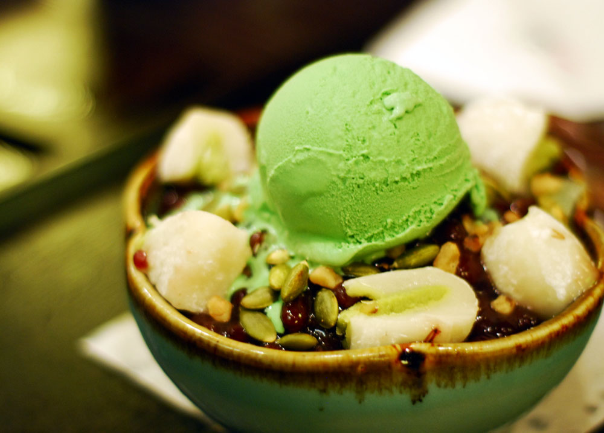

About
I’ve always dreamed of having my own website/business when I was a child. The whole idea seemed really cool. I started off making graphics for neopets guilds and was really happy for what I had been doing. Thus began my endeavor to learn every single thing I could on html, css, and all that icky coding stuff. Within a couple weeks, I had my website up and running and was providing custom graphic/web design services to clients.
It has been 8 years since I first launched my website and I absolutely enjoy working with different people, especially those who have the entrepreneurial spirit like I do. I find it rewarding to be able to help them launch their business or blog endeavors.
Thanks for reading this and I look forward to working with you!
Discover my favorite things!


1
2
3
4